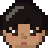

Andrea Rojas
Andrea Rojas é amiga da Letícia desde a faculdade, em Gotham, e hoje comanda os próprios negócios em Metrópolis. Não mora em National City, então não entra no painel de relacionamentos: a amizade cresce pelas mensagens e pelas visitas. Ela não tem nada a ver com a Luthor Corp: é só amiga.
Visitas
Uma vez por estação ela vem à cidade. Na véspera chega um aviso, de manhã o convite pelo celular, e a cena toca quando a Letícia chega ao lugar no horário. Cada visita dá um presente, energia (+30), carisma e bom astral: as conversas rendem 25% mais amizade até o fim do dia.
| Estação | Dia | Onde | Horário | Presente |
|---|---|---|---|---|
| Primavera | Dia 11 (quinta) | No Grão Nobre | 9h às 13h | |
| Verão | Dia 12 (sexta) | Na praia, perto do píer | 17h às 20h | |
| Outono | Dia 11 (quinta) | Na Ricci Trattoria | 19h às 22h | Vinho Tinto |
| Inverno | Dia 11 (quinta) | No terraço da sua cobertura | 18h às 22h |
Mensagens
A partir do 4º dia ela manda mensagens de vez em quando, como as amigas da cidade. Cada mensagem tem três respostas e ela sempre responde de volta.
Ver as 12 mensagens e as respostas
Reunião de nove horas em Metropolis. Nove! Horas! Me manda uma foto do mar para eu lembrar que o mundo existe.
- Foto enviada. Com gaivota de brinde. → A gaivota parece mais calma do que o meu conselho inteiro. Obrigada.
- Respira. Você já sobreviveu a reuniões piores. → Sobrevivi. Mas eu tinha você do lado, rabiscando o meu caderno.
- Larga tudo e vem para National City. → Não me tenta. Eu já olhei o preço da passagem. Duas vezes.
Li a CatCo hoje. Você está em todas as páginas. Quando foi que você virou a pessoa mais interessante da costa?
- Sempre fui. Você que demorou a perceber. → Convencida como na faculdade. Que bom que algumas coisas não mudam.
- A Lucy exagera. Um pouquinho. → Um pouquinho? Ela escreve como quem gosta muito do assunto. Só digo isso.
- Recorta e guarda. Vou autografar. → Já recortei. Está na minha geladeira, do lado do imã de Gotham.
Lembra quando a gente fugiu da aula de finanças para ver o mar em Gotham? Hoje eu fugi de um almoço. Mesma sensação.
- E o mar estava cinza, como sempre. → Cinza e gelado. E mesmo assim foi a melhor tarde do semestre.
- Fugiu para onde? → Para uma livraria. Comprei três livros e esqueci o guarda-chuva lá. Valeu a pena.
- Não conta para o seu conselho. → Meu conselho acha que eu estava numa call. Eu estava. Com um café.
Pergunta séria: você está dormindo? Não vale responder "às vezes".
- Às vezes. ...Tá, quase nunca. → Eu sabia. Hoje: celular longe e cama antes da meia-noite. É uma ordem de amiga.
- Estou, sim. A cama da cobertura é ótima. → Ótimo. Vou fingir que acredito, porque te amo.
- Você está acordada também, então... → Touché. Combinado: nós duas dormimos agora. Boa noite, Luthor.
Fechei uma parceria hoje e a primeira pessoa para quem eu quis contar foi você. Isso diz muito sobre a minha vida social.
- Parabéns! Eu sabia que você ia conseguir. → Você sempre sabe. É irritante e maravilhoso ao mesmo tempo.
- Diz que você tem boas amigas. → Uma ótima amiga. As outras são o meu contador e a minha planta.
- Vamos comemorar na sua próxima visita. → Fechado. Você escolhe o lugar, eu escolho a sobremesa.
Sonhei que a gente apresentava um projeto juntas e o projetor pegava fogo. A gente ganhava mesmo assim.
- Isso não é sonho, é Gotham 2019. → Meu Deus, é verdade. O professor nunca se recuperou.
- Ganhar é com a gente mesmo. → Sempre. Com ou sem projetor.
- Foi um sonho ou uma ameaça? → Uma profecia. Prepara a apresentação.
Meu assistente perguntou quem é a "Letícia" que me faz rir em reunião. Eu disse: "a única CEO que eu respeito".
- Só respeita? Achei que admirasse. → Admiro. Respeito. E roubo umas ideias. Não necessariamente nessa ordem.
- Manda um abraço para o assistente. → Mandei. Ele ficou vermelho. Agora ele é seu fã.
- Para de rir em reunião, Andrea. → Impossível. Você manda mensagem nas horas mais erradas.
Metropolis está chovendo há quatro dias. Me conta uma coisa boa de National City.
- O Harry desenhou um gato na espuma do meu café. → Um gato! Pronto, meu dia melhorou trinta por cento.
- O pôr do sol no píer. Sempre. → Me guarda um. Na próxima visita, a gente vê juntas.
- Eu. Eu sou a coisa boa de National City. → Não posso discordar. Mas posso revirar os olhos daqui.
Achei uma foto nossa da formatura. Você de beca e com cara de quem já ia dominar o mundo. Acertou.
- E você de beca e chorando. → Chorando de orgulho! E de calor. Aquela beca era de lã.
- Me manda essa foto! → Mandei. Coloca no mural, do lado das fotos do Barry.
- A gente era muito nova. → Nova e corajosa. Ainda somos uma das duas coisas.
Experimentei o café do aeroporto de Metropolis. Péssimo. Agora só confio no Grão Nobre.
- O Harry vai ficar orgulhoso. → Diz para ele guardar um cappuccino para a minha próxima visita.
- Vem tomar um aqui, então. → Não me tenta. Eu já estou olhando passagem de novo.
- Café de aeroporto é crime. → Deveria ser. Vou propor uma lei.
Meu conselho perguntou como você conseguiu dobrar a ação da Luthor Corp. Eu disse: teimosia e café.
- Faltou dizer: boas amigas. → Deixei de fora para eles não ficarem com inveja.
- Teimosia é o principal. → Eu sei. Eu estava lá na faculdade. Eu lembro.
- E o que eles disseram? → Pediram o seu contato. Eu disse que você é exclusiva minha.
Comprei um vestido que eu nunca vou usar porque ele parece com a sua cara. Isso é normal?
- Totalmente normal. → Ótimo. Vou comprar mais dois, então.
- Manda foto! → Mandei. Seja sincera. Não, seja gentil. Seja as duas.
- Usa na sua próxima visita. → Combinado. A gente tira foto no píer.


Retratos

| Luthor Corp | |
|---|---|
| CatCo | |
| Moradores |  Theo |
| Conti Moretti | |
| De fora da cidade |